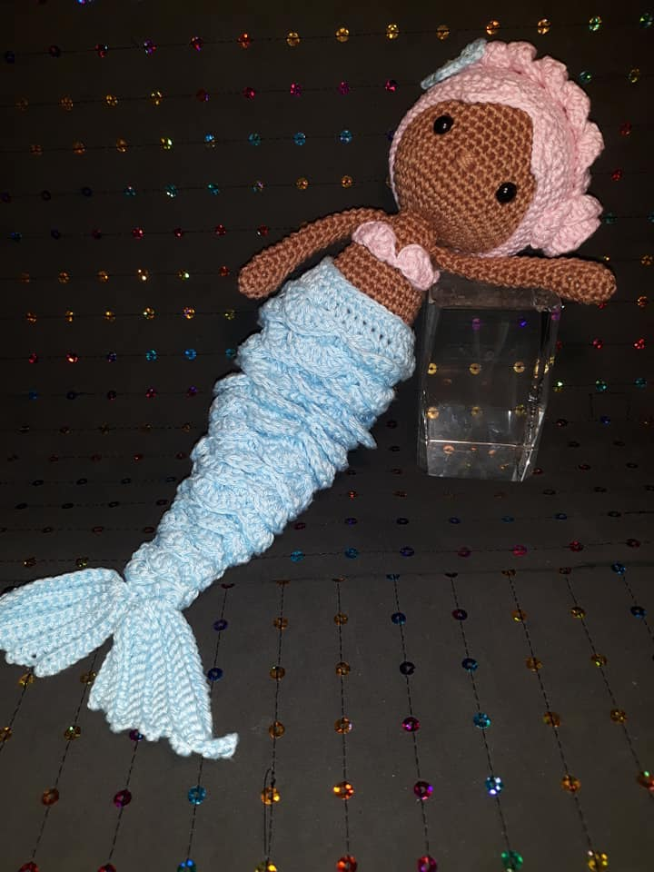
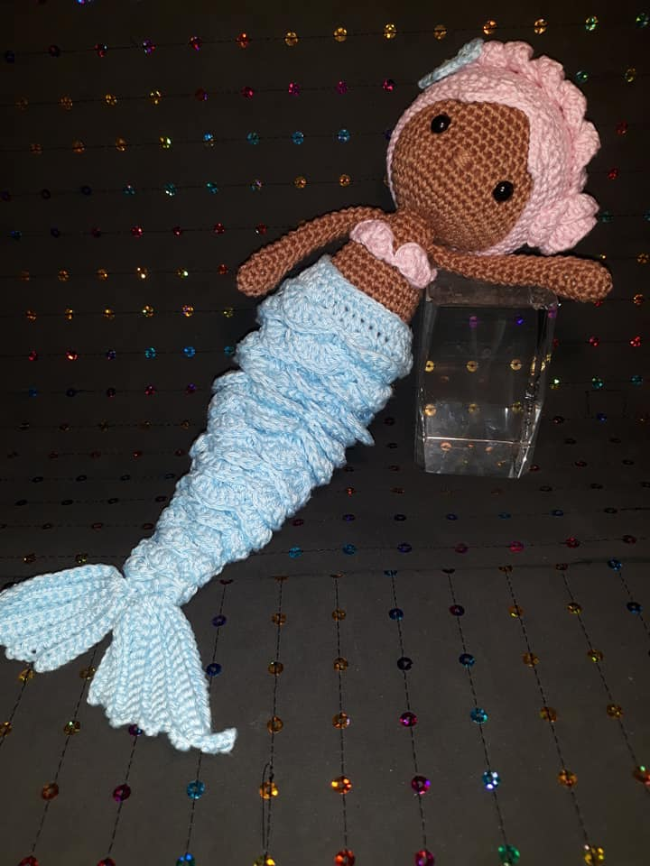
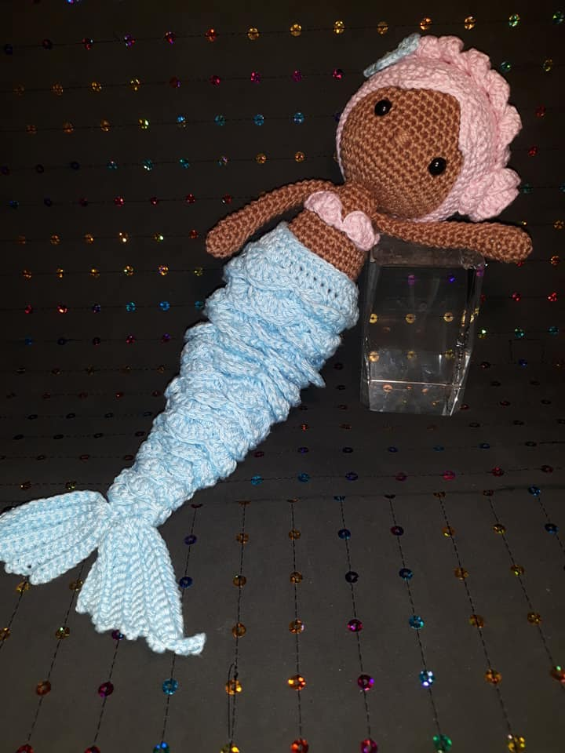

Fotos


 

Quem está por dentro do mundo do DIY sabe que uma das principais tendências do momento é o amigurumi. Muito famoso mundo afora, o amigurumi chegou ao Brasil como uma verdadeira febre, o que pode ser explicado pela beleza dos modelos encontrados no mercado. Com um design simples e delicado, é difícil encontrar quem não se apaixone por um amigurumi de crochê.
Ver maisOi, eu sou a Mariane , sou artesã e apaixonada pelo crochê! Sempre busquei aprender e tive que me virar sozinha.Por algum tempo fazia os amigurumis só para mim ou para dar de presente. Não sentia muita confiança em mostrar o meu trabalho e acabava deixando tudo guardado em casa. Depois que me tornei mãe, resolvi tentar alguma forma de empreendedorismo materno e foi assim que a Lottos Amigurumis nasceu!
Comprar AgoraTrabalhar com as mãos é uma terapia, Trabalhar com o coração é uma alegria!
Crie momentos importantes, presenteando alguem com um lindo amigurumi.
Inumeras crianças estão encontrando conforto nos amigurumis, ajudando a melhorar sua autoestima.

Entre em contato